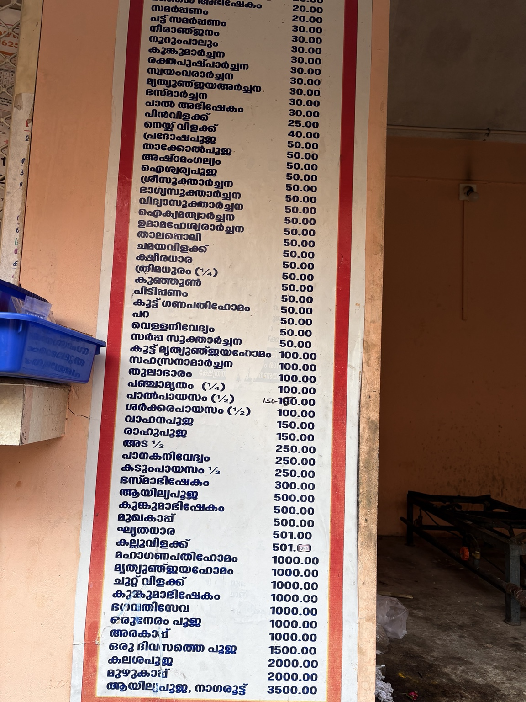

ക്ഷേത്രത്തെക്കുറിച്ച്
കളത്തറക്കോണം കാവിൽ ദേവി ക്ഷേത്രത്തിന്റെ വിവരങ്ങൾ, നിത്യപൂജാ സമയങ്ങൾ, വിശേഷാൽ പൂജകൾ, വഴിപാടുകൾ എന്നിവ ഭക്തജനങ്ങൾക്ക് ലഭ്യമാക്കുന്നതിനായുള്ള ഔദ്യോഗിക വെബ്സൈറ്റ് മാതൃക.
ദിവസേനയുള്ള പൂജാക്രമം
🌅 രാവിലെ
പള്ളി ഉണർത്തൽ5:15 AM
നടതുറക്കൽ5:30 AM
എതിരേൽപ്പ് പൂജ6:30 AM
ഗണപതി ഹോമം6:45 AM
ഉഷഃ പൂജ7:15 AM
ഉച്ച പൂജ8:45 AM
നട അടയ്ക്കൽ9:30 AM
🌆 വൈകുന്നേരം
നടതുറക്കൽ5:00 PM
സന്ധ്യാദീപാരാധന6:15 PM
അത്താഴ പൂജ7:00 PM
നട അടയ്ക്കൽ7:30 PM
വിശേഷ ദിവസങ്ങളിൽ സമയക്രമത്തിൽ മാറ്റമുണ്ടാകാം.
പ്രധാന വഴിപാടുകളും വിശേഷാൽ പൂജകളും
ഗണപതി ഹോമം
വിശേഷാൽ പൂജയ്ക്കായി ബുക്കിംഗ് അഭ്യർത്ഥിക്കാം.
മൃത്യുഞ്ജയ ഹോമം
തീയതിയും വിശദാംശങ്ങളും സ്ഥിരീകരിക്കുക.
ആയില്യ പൂജ & നാഗരൂട്ട്
ആയില്യ ദിവസങ്ങളിലെ വഴിപാടുകൾ.
ഭഗവതി സേവ
വിശേഷാൽ ദിവസങ്ങളിലെ പൂജാ ബുക്കിംഗ്.
പൗർണമി പൂജ
പൗർണമി ദിവസത്തെ പൂജകൾ.
രാഹുകാല പൂജ
നിശ്ചിത ദിവസങ്ങളിലെ പൂജയും പ്രസാദ ഊട്ടും.
ക്ഷേത്രത്തിലെ വഴിപാട് നിരക്കുകൾ

നിരക്കുകൾ ബുക്കിംഗിന് മുമ്പ് ക്ഷേത്ര അധികൃതരുമായി സ്ഥിരീകരിക്കുക.
ഓൺലൈൻ പൂജ ബുക്കിംഗ് അഭ്യർത്ഥന
വിവരങ്ങൾ പൂരിപ്പിച്ച് WhatsApp വഴി ക്ഷേത്രത്തിലേക്ക് അയയ്ക്കാം. സ്ഥിരീകരണത്തിന് ശേഷമേ ബുക്കിംഗ് ഉറപ്പാകൂ.
ബന്ധപ്പെടുക
കളത്തറക്കോണം കാവിൽ ദേവി ക്ഷേത്രം
ഇടയ്ക്കോട്, നേമം പി.ഒ.
ട്രസ്റ്റ് രജിസ്റ്റർ നമ്പർ : 2940/05
ഫോൺ / WhatsApp: 9746014157